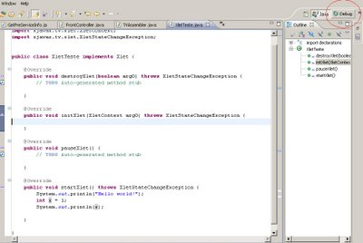
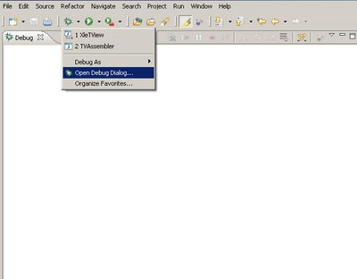
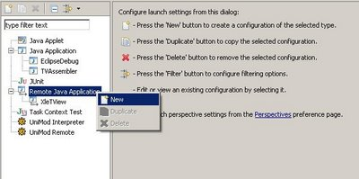
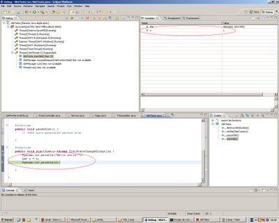
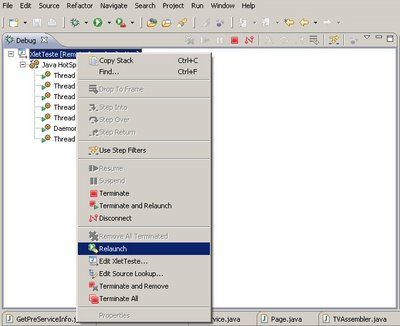

Um fator que há muito tempo me incomodava ao fazer xlets no XleTView era a aparente falta de possibilidade de realizar um debug.
Este tutorial mostra como realizar o debug de seu xlet, executado a partir do XleTView, usando a plataforma Eclipse (http://www.eclipse.org/).
Atenção: este tutorial não explica como fazer o debug no Eclipse, mas sim os passos necessários para que o debug no Eclipse possa ser realizado a partir de um xlet sendo executado no XleTView.
Configurando o XleTView
Para podermos realizar o debug, o XleTView deve ser chamado da seguinte maneira:
java -Xdebug -Xnoagent -Xrunjdwp:transport=dt_socket,address=8000,server=y,suspend=n -jar xletview.jar
Configurando o debug do Eclipse
1. Abra a perspective de debug (Figura 1)

2. No menu de debug seleciona “Open debug dialog...” (Figura 2)

3. No diálogo de debug insira um novo elemento de debug abaixo do elemento “Remote Java Application”, na árvore à esquerda (Figura 3)

4. Se necessário altere as propriedades do debug (à direita da árvore do passo anterior); o mais importante aqui é que a porta usada seja a mesma que foi passada como parâmetro para o XleTView (no meu exemplo, a porta 8000).
Pronto, agora basta setar seu(s) breakpoint(s) no Eclipse e iniciar a aplicação através do XleTView.
Na figura 4 temos um exemplo de debug, em que podemos constatar a na janela de variáveis o valor da variável x.

Repare que na perspectiva de debug é importante conhecer algumas opções de controle, como o “Terminate” e o “Relaunch”, que podem ser vistos na figura 5.

Espero que aproveitem a dica!
Autor: Leonardo Leite


{kind=link}
{kind=link}
{kind=link}
{kind=link}
{kind=link}
2 comentários:
Aqui no meu eclipse (no Windows Vista)não funcionou. O debug não é feito.
Vc poderia explicar melhor oq tentou fazer e oq foi q aconteceu?
Talvez o problema seja uma configuração de segurança do sistema, já que a comunicação do Eclipse e do XleTView se dá por uma porta de comunicação do PC.
Não sei se tô viajando, como um teste mais simples, vc pode tentar trocar o valor daquela porta (as vezes ela já tá sendo usada por outro programa seu tb)
Postar um comentário
Links para esta postagem
Criar um link